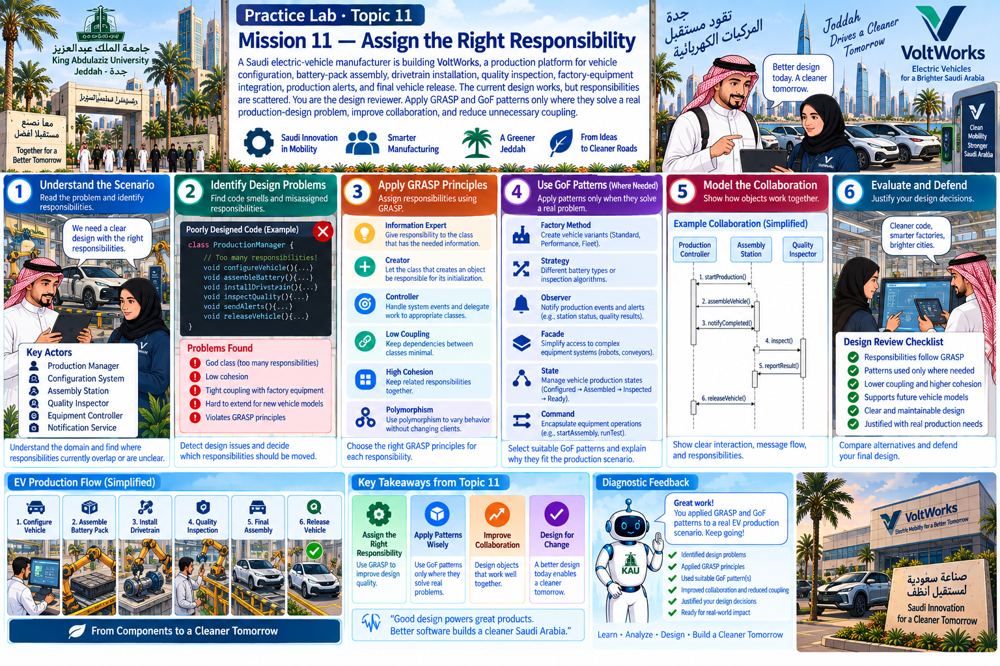

Practice Lab · Topic 11
A Saudi electric-vehicle manufacturer is building VoltWorks, a production platform for vehicle configuration, battery-pack assembly, drivetrain installation, quality inspection, factory-equipment integration, production alerts, and final vehicle release. The current design works, but responsibilities are scattered. You are the design reviewer. Apply GRASP and GoF patterns only where they solve a real production-design problem, improve collaboration, and reduce unnecessary coupling.
